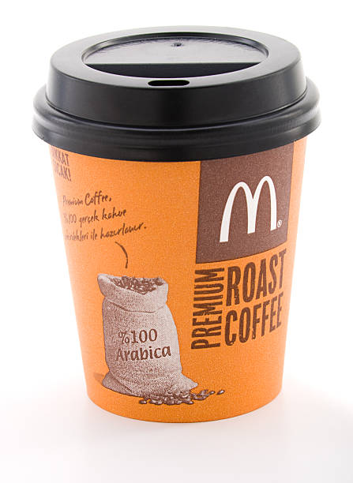
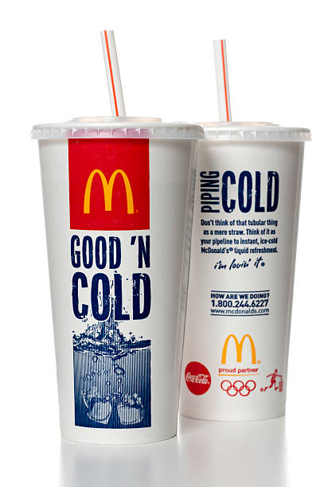

It's not just Burger
It's Mac'donald
Every day, Mac'Donalds partners go to work hoping to do two
things
: share great Burger with friends and help make
the world a little better.
It was true when the first Mac'donalds opened in 1955.


- 
- 